0. 오늘의 질문
도입 · 2분이 느낌을 그림으로 보여 줄 수 있을까? — 오늘은 소리를 크기의 그림(파형)과 높이의 그림(스펙트로그램)으로 바꿔 읽는다.
1. 개념 정의
소리 → 파형 → 스펙트로그램 · 8분소리
공기의 압력이 빠르게 오르내리는 진동
- 주파수(Hz)
- 1초에 몇 번 진동하나 → 음높이. 많을수록 높은 소리. 사람의 귀는 대략 20Hz~20kHz를 들음
- 진폭
- 진동의 폭 → 크기
- 배음 구성
- 기본음 위에 함께 울리는 높은 성분들의 세기 → 음색의 주요 요인. 소리가 시작·소멸하는 모양(어택·감쇠)도 음색에 영향을 줌. 같은 '라'(440Hz)라도 피아노와 기타가 다르게 들리는 까닭
Rossing, Moore, & Wheeler (2002)
파형
시간에 따라 소리의 크기(진폭)가 어떻게 변하는지 그린 그래프
- 가로축
- 시간(초)
- 세로축
- 진폭. 디지털 최대치를 1로 놓고 −1~1로 표시
- 알 수 있는 것
- 언제 크고 작은가, 소리가 시작되는 순간(어택), 줄어드는 모양(감쇠), 구간이 바뀌는 곳
- 알기 어려운 것
- 30초처럼 넓게 볼 때는 어떤 음높이인지, 어떤 악기인지 알기 어려움
스펙트로그램
소리를 아주 짧은 조각으로 잘라, 조각마다 어떤 높이의 성분이 얼마나 센지 색으로 그린 그림
- 가로축
- 시간(초)
- 세로축
- 주파수(Hz) = 음높이. 아래가 저음, 위가 고음
- 색
- 그 높이 성분의 세기(dB). 밝을수록 셈
- 원리
- 짧은 구간 푸리에 변환(STFT): 짧은 조각마다 소리를 주파수 성분으로 나눔
Müller (2021), 2장
64 → 128 → 256 → 512…처럼 두 배가 될 때마다 같은 간격으로 그림. 주파수가 두 배 = 한 옥타브 위이므로, 건반처럼 옥타브가 같은 간격으로 보인다. 일반 눈금이면 저음 쪽이 바닥의 좁은 띠로 눌려 보인다.
오늘 그림의 0dB는 그 곡에서 가장 센 성분이다. −80dB에 가까울수록 검정. 곡마다 자기 최댓값을 기준으로 그렸으므로, 곡끼리 "어느 곡이 더 크다"를 비교하는 데는 쓰지 않는다. 한 곡 안에서 어디가 밝은지를 본다.
2. 스펙트로그램에서 읽는 네 가지 모양
그림 문법 · 4분한 높이가 계속 울림. 여러 줄이 위로 갈수록 촘촘하게 겹치면 기본음 + 배음
아주 짧은 순간 여러 높이가 한꺼번에. 소리가 짧고 갑작스러울수록 높이가 넓게 퍼짐 → 드럼·손뼉처럼 치는 소리
음높이가 움직임 → 예: 노래 선율, 비브라토, 미끄러지는 음
높이가 정해지지 않은 잡음 성분 → 예: 심벌, 디스토션, 숨소리
그리고 검정 = 비어 있음. 어두운 부분이 많을수록 그 높이에 소리가 없다는 뜻.
3. 듣고 → 보고 → 근거 말하기
곡 A · B · C · 각 30초 · 15분곡 이름은 알려 주지 않는다. 먼저 30초를 듣고, 원래 그림을 보며 질문에 답한 뒤 아래 해설 그림으로 확인한다. 곡 이름은 마지막에 공개.
진행 키 (교사용)
그림마다 원래 그림 아래에 해설 그림이 함께 있음. 곡 카드 위에 마우스를 올리고 T → 곡 이름 공개. 비교표 위에서 A → 정답 칸 공개.
- 처음 7초와 그 뒤, 파형의 모양은 어떻게 달라지나?
- 스펙트로그램에서 가장 밝은 높이는 어디인가?
- 곡 앞부분의 고음 쪽은 밝은가, 어두운가?
- 소리가 순간 멈추는 곳이 보이나?
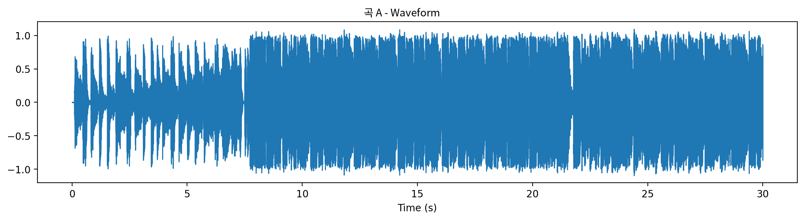
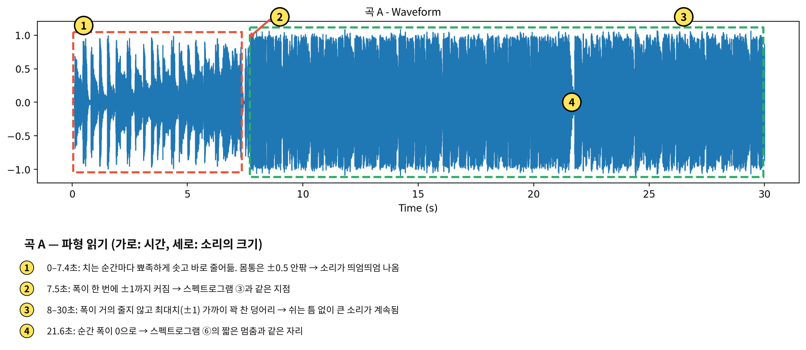
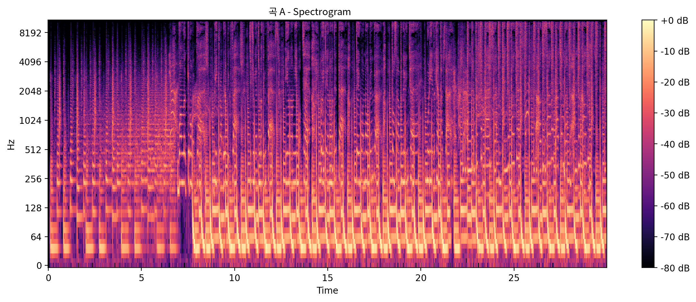
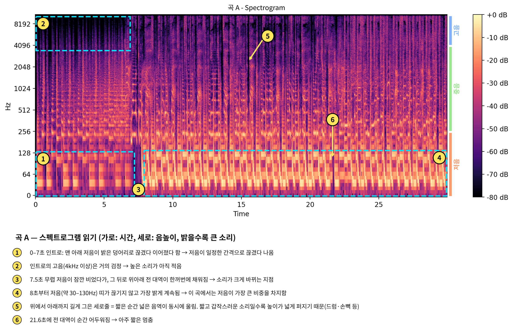
- 2초 전과 후, 파형과 스펙트로그램은 어떻게 달라지나?
- 저음의 밝은 띠는 곡 A와 비교해 높이가 어떻게 다른가?
- 고음 쪽(위쪽)은 얼마나 채워져 있나?
- 중간 높이에 보이는 굽은 선은 무엇의 흔적일까?
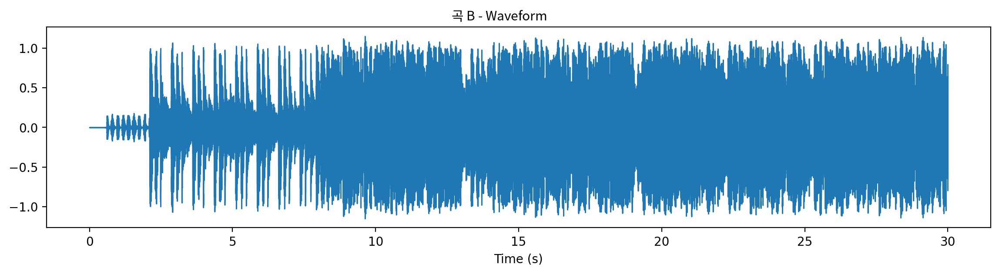
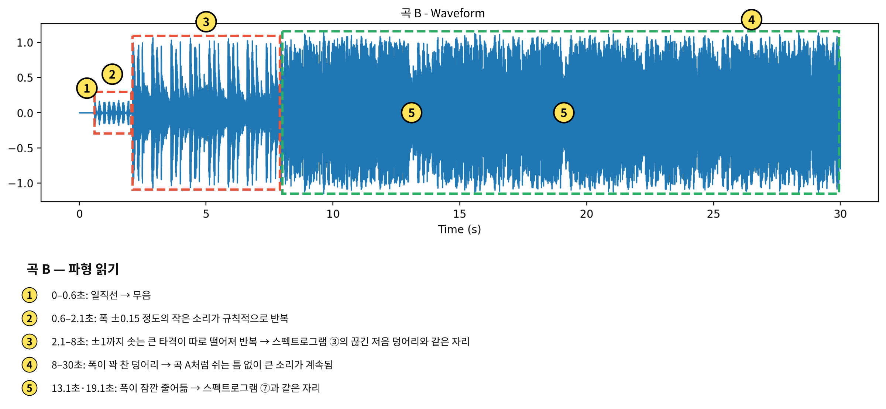
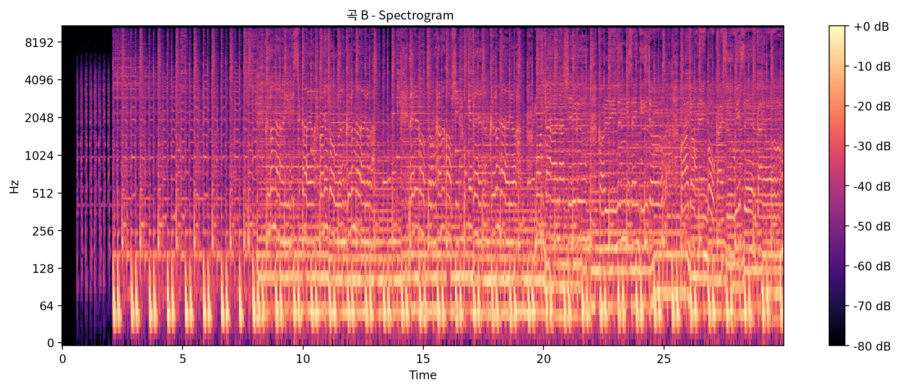
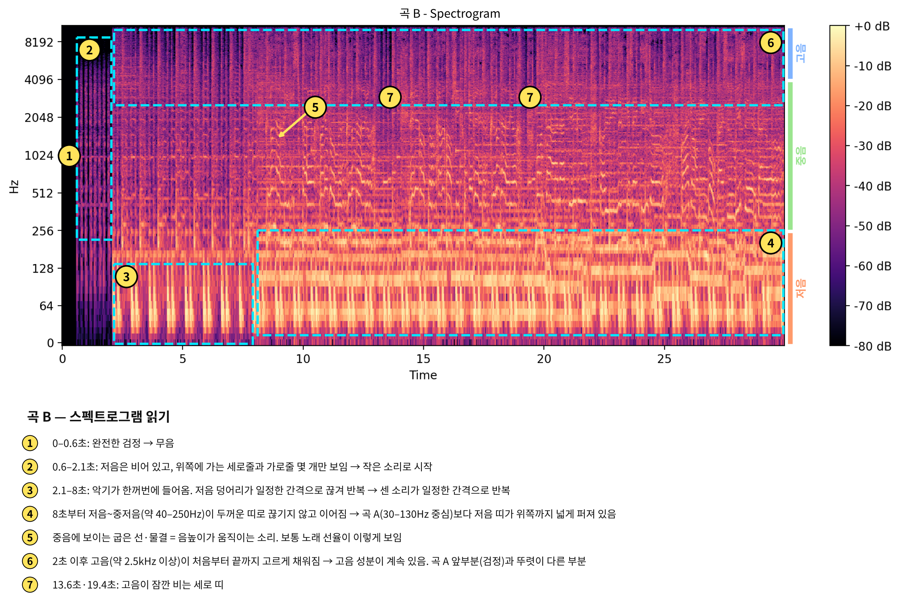
- 처음 5초 동안 저음은 있나?
- 파형의 뾰족한 모양은 곡 A·B와 어떻게 다른가?
- 노래가 들어오는 순간은 몇 초쯤이고, 그림에서는 무엇으로 보이나?
- 검정(빈 공간)은 곡 A·B보다 많은가, 적은가?
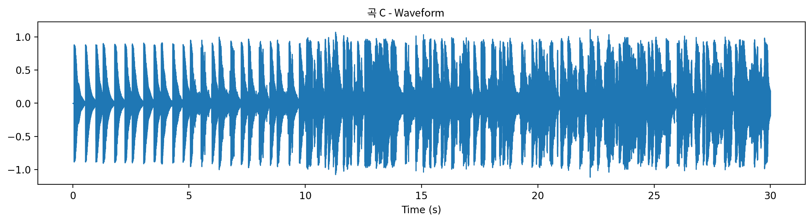
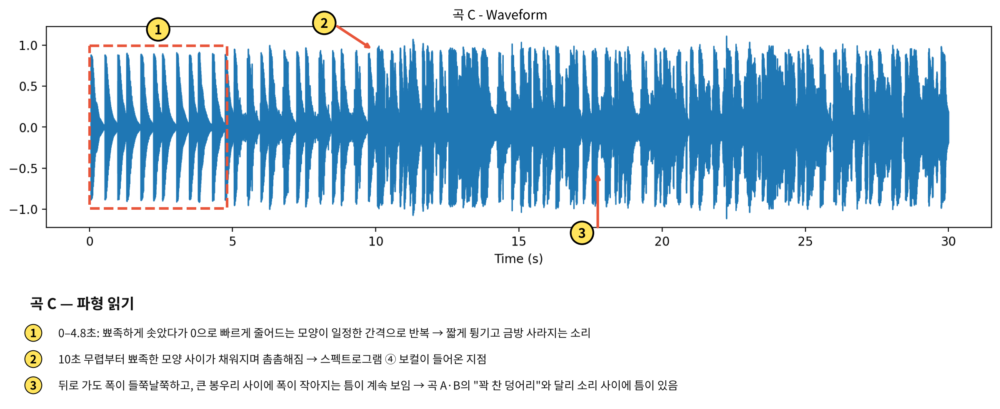
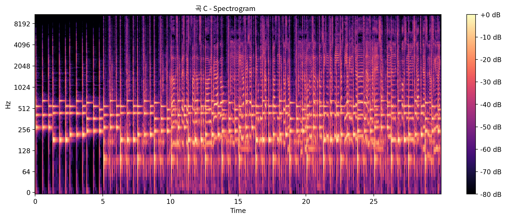
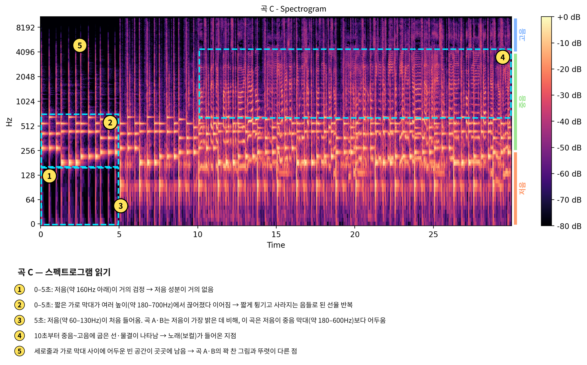
4. 세 곡 비교표
활동지 · 5분모둠별로 빈칸을 채운다. 그림에서 본 것(근거) → 들리는 느낌(해석) 순서로 쓴다.
| 보는 곳 | 곡 A | 곡 B | 곡 C |
|---|---|---|---|
| 파형의 모양 꽉 찬 덩어리 / 띄엄띄엄 | 7.4초 전 띄엄띄엄 → 이후 ±1까지 꽉 찬 덩어리 | 2.1초 전 작은 소리 → 8초부터 꽉 찬 덩어리 | 뾰족했다 빨리 줄어드는 모양 반복, 끝까지 틈이 보임 |
| 저음 (256Hz 아래) | 30~130Hz 띠가 가장 밝고 끊기지 않음 | 40~250Hz까지 두껍고 넓은 띠 | 5초 전 거의 없음. 이후에도 이 곡 안에서는 중음 막대보다 어두움 |
| 중음 (256Hz~4kHz) | 세로줄과 짧은 곡선이 촘촘함 | 가로줄이 빽빽하고, 노래 선율로 보이는 굽은 선이 뚜렷 | 짧은 가로 막대(튕기는 음) + 10초부터 노래 곡선 |
| 고음 (4kHz 위) | 앞 7초는 거의 검정, 이후 채워짐 | 2초 이후 처음부터 끝까지 고르게 채워짐 | 가는 세로줄 위주, 빈 곳이 많음 |
| 한마디로 | 저음이 가장 밝고, 8초부터 위아래가 꽉 참 | 저음부터 고음까지 고르게 꽉 참 | 중음이 가장 밝고, 빈 곳(검정)이 가장 많음 |
5. 악기는 어느 높이에 사나
주파수 대역표 · 5분스펙트로그램과 같은 세로 눈금으로 대중음악 악기(전자음 포함)의 대략적인 대역을 그렸다. 진한 막대는 주 대역(소리가 가장 많이 모인 범위: 선율 악기·보컬은 기본음, 드럼은 몸통 울림), 옅은 막대는 보조 대역(약하지만 음색·어택에 영향을 주는 범위)이다. 기본음이 없는 하이햇·심벌은 주 대역이 위쪽에 있다.
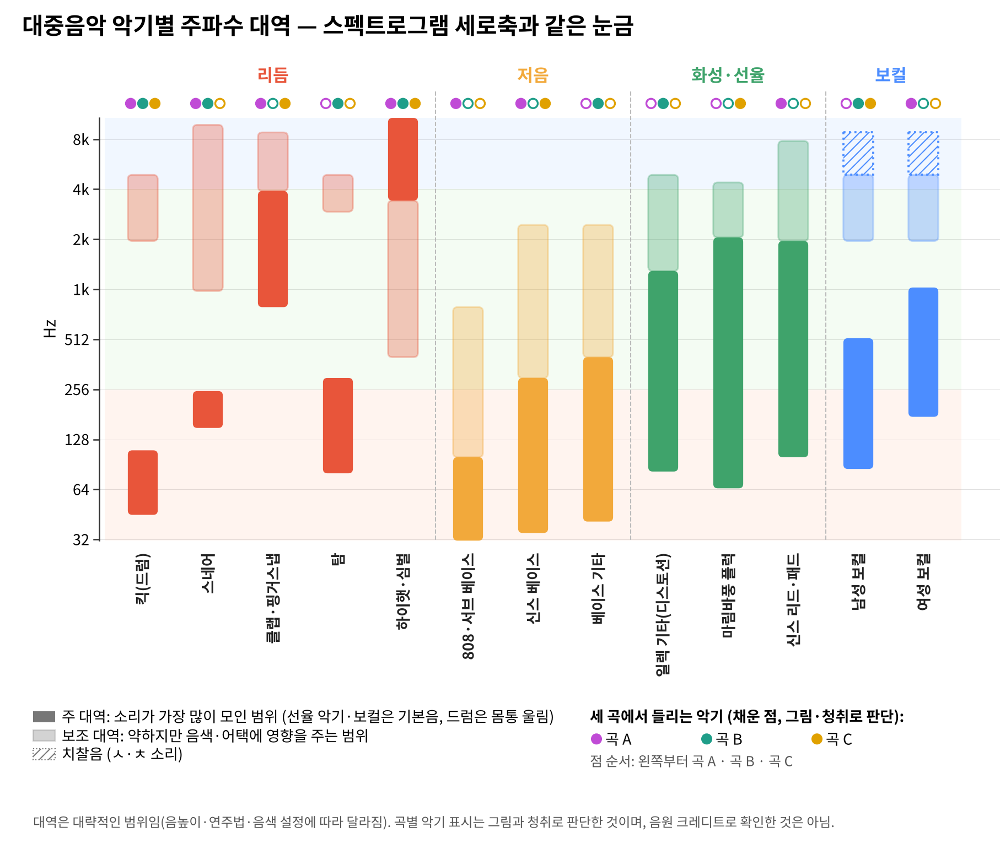
점 3개는 왼쪽부터 곡 A·B·C. 채운 점은 그림과 청취로 판단한 악기이며, 음원 제작 정보(크레디트)로 확인한 것은 아니다. 대역은 음높이·연주법·음색 설정에 따라 달라지는 대략적인 범위다. 기타·베이스·마림바의 음역은 Adler(2016)를 따랐고, 드럼·전자음·목소리의 대역은 녹음 실무에서 쓰는 대략값으로 특정 문헌의 수치를 옮긴 것은 아니다.
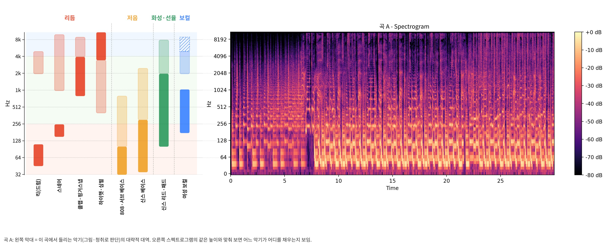
6. 교육에서 어떻게 쓰나
활용 · 6분"꽉 차게 들린다"를 "고음까지 고르게 밝다"처럼 보이는 근거로 바꿔 말하게 한다. 들은 것과 본 것을 오가며 음색의 차이를 설명한다.
노래를 녹음해 음높이 곡선과 비브라토를 눈으로 확인한다. 성악 레슨에 실시간 음성 시각화를 쓴 실행연구에서 교사·학생은 대체로 도움이 되었다고 보고했고(Welch et al., 2005), 가창 훈련용 시각 피드백 도구를 정리한 문헌 검토도 있다(Hoppe et al., 2006).
악기들이 같은 높이에 몰리면 서로를 가려(마스킹) 또렷하게 들리지 않을 수 있다. 대역표로 악기마다 자리를 나누는 편곡·믹싱의 원리를 설명한다(Owsinski, 2017).
주파수·진폭·배음을 그림으로 확인한다. 같은 음높이라도 악기마다 배음 줄의 세기가 다르다는 것을 보여 줄 수 있다(Rossing et al., 2002).
수업에서 쓸 수 있는 도구
| 도구 | 특징 | 수업 장면 |
|---|---|---|
| Chrome Music Lab — Spectrogram | 웹에서 바로 실행, 설치 없음. 마이크 소리를 실시간으로 그림 | 도입: 학생이 소리를 내며 그림이 변하는 것을 체험 |
| Sonic Visualiser | 무료 음원 분석 프로그램. 파형·스펙트로그램을 겹쳐 보고 확대 가능(Cannam et al., 2010) | 감상: 곡의 특정 구간 확대 비교 |
| Audacity | 무료 녹음·편집 프로그램. 트랙 보기를 스펙트로그램으로 전환 가능 | 가창·창작: 녹음 후 바로 확인 |
| Google Colab + librosa | 파이썬 코드로 그림을 직접 그림. 여러 곡을 같은 조건으로 비교(McFee et al., 2015) | 심화: 오늘 그림을 만든 방법 |
7. 수업 흐름 — 교실에서 이렇게
1차시 예시곡 이름 없이 30초 듣기. "꽉 찼다 / 비었다 / 묵직하다" 느낌을 한 단어로 적기
"이 곡의 그림은 어디가 밝을까?" 저음·중음·고음 중 골라 보기
파형 → 스펙트로그램 순서로 보며 네 가지 모양(가로줄·세로줄·곡선·번진 영역) 찾기
"OO초, OO높이가 밝으니까 OO하게 들린다" 형식으로 발표
비교표 채우기 → 악기 대역표로 확인 → 곡 이름 공개
내가 좋아하는 곡 또는 내 목소리로 같은 그림을 만들어 보기
참고문헌
- 교육부 (2022). 음악과 교육과정 (교육부 고시 제2022-33호 [별책 12]).
- Adler, S. (2016). The Study of Orchestration (4th ed.). W. W. Norton.
- Cannam, C., Landone, C., & Sandler, M. (2010). Sonic Visualiser: An open source application for viewing, analysing, and annotating music audio files. Proceedings of the 18th ACM International Conference on Multimedia, 1467–1468.
- Hoppe, D., Sadakata, M., & Desain, P. (2006). Development of real-time visual feedback assistance in singing training: A review. Journal of Computer Assisted Learning, 22(4), 308–316. https://doi.org/10.1111/j.1365-2729.2006.00178.x
- McFee, B., Raffel, C., Liang, D., Ellis, D. P. W., McVicar, M., Battenberg, E., & Nieto, O. (2015). librosa: Audio and music signal analysis in Python. Proceedings of the 14th Python in Science Conference, 18–24.
- Müller, M. (2021). Fundamentals of Music Processing (2nd ed.). Springer.
- Owsinski, B. (2017). The Mixing Engineer's Handbook (4th ed.). BOMG Publishing.
- Rossing, T. D., Moore, F. R., & Wheeler, P. A. (2002). The Science of Sound (3rd ed.). Addison-Wesley.
- Welch, G. F., Howard, D. M., Himonides, E., & Brereton, J. (2005). Real-time feedback in the singing studio: An innovatory action-research project using new voice technology. Music Education Research, 7(2), 225–249. https://doi.org/10.1080/14613800500169779